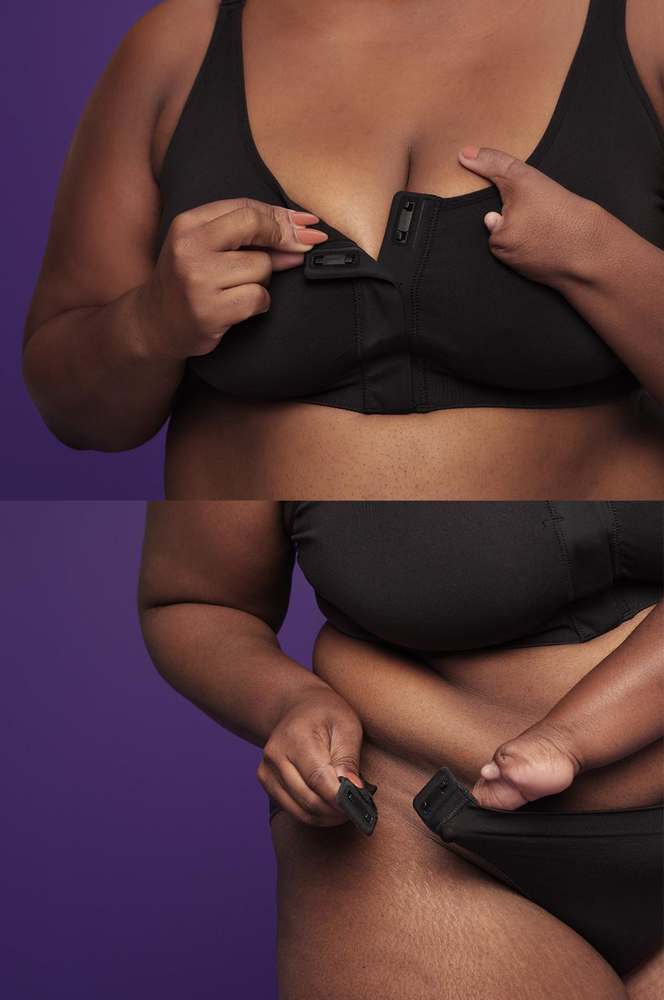

Descripción del Dispositivo
La lencería adaptativa de Primark incluye sujetadores sin costuras y bragas con cierres magnéticos en los laterales, diseñada para ofrecer una experiencia cómoda y ajustable a diferentes tipos de cuerpo. Este enfoque innovador permite que las prendas se adapten de manera efectiva a la figura de cada usuaria, eliminando las molestias asociadas a las costuras tradicionales.
Beneficios
- Ajuste Personalizado: Los sujetadores sin costuras se adaptan perfectamente a la forma del cuerpo, evitando irritaciones y marcas.
- Comodidad: Los materiales suaves y flexibles proporcionan una sensación de segunda piel, ideal para el uso diario.
- Cierres Magnéticos: Las bragas con cierres magnéticos facilitan la colocación y el ajuste, permitiendo una mayor comodidad y accesibilidad.
- Inclusividad: Esta colección está diseñada para diferentes tipos de cuerpo, promoviendo la diversidad y la aceptación de todas las formas y tamaños.
- Innovación en Moda: La lencería adaptativa representa un avance significativo en la moda íntima, incorporando tecnología y diseño que mejoran la funcionalidad.
Evolución
La lencería adaptativa marca un cambio crucial en la industria de la moda íntima. Anteriormente, las prendas de lencería solían ser rígidas y poco flexibles, lo que dificultaba un ajuste adecuado. Sin embargo, la introducción de sujetadores sin costuras y bragas con cierres magnéticos representa una evolución hacia un diseño más ergonómico y centrado en el usuario.
Los sujetadores sin costuras eliminan la fricción y las marcas en la piel, mientras que los cierres magnéticos en las bragas proporcionan una alternativa más sencilla a los cierres tradicionales, permitiendo a las usuarias un ajuste rápido y sin complicaciones. Este avance no solo mejora la comodidad, sino que también reduce el tiempo necesario para vestirse.
Más Información
Para más información sobre esta nueva colección de lencería adaptativa, visita este enlace.